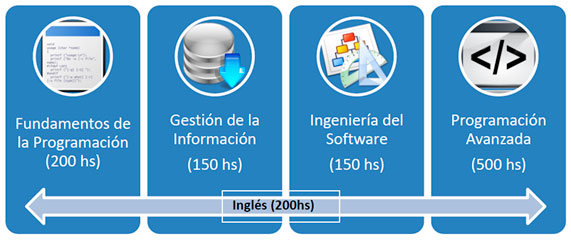

El Informatorio es el Laboratorio de Capacitaciones Informáticas de la Provincia del Chaco, toma su nombre justamente por ser un Laboratorio Informático.
Un poco de historia.
El Informatorio Chaco ha nacido como una iniciativa que atiende a la falta de recursos humanos calificados en conocimiento técnico para la industria Industria de Software y Servicios Informáticos (SSI) chaqueña, identificado como uno de los principales problemas de la Industria, a partir del diálogo y la participación ciudadana en el Foro de Competitividad de la SSI de Chaco realizado desde el año 2009 al 2010. En este sentido, la comisión de Recursos Humanos del mencionado foro determinó que una de las estrategias a implementar para el desarrollo de la industria sería la “Formación de Recursos Humanos en Herramientas Informáticas Específicas”. Se convocó a la Empresa Sistemas Globales S.A. y al Polo Tecnológico Chaco, para consensuar la idea de montar el laboratorio con una capacitación específica que genere recursos humanos con la capacidad de un técnico informático en el plazo de un año. También se decidió en esta instancia que sería deseable el dictado de otros cursos que contribuyan a consolidar conocimientos de los empleados actuales de las empresas, como también de los futuros empleados. Al avanzar en estas reuniones emergió que la participación de la Universidad Tecnológica Nacional Facultad Regional Resistencia resultaba fundamental.El Informatorio tiene como objetivo primordial formar a los jóvenes en las competencias necesarias para ingresar a la industria creciente de Software y Servicios Informáticos de la Provincia del Chaco.
- Mail: informatoriochaco@gmail.com
- Facebook: informatorio
- Twitter: N/A
El Curso de Desarrollo Avanzado de Aplicaciones Informáticas contempla los siguientes Módulos:
- Tecnologías .NET.
- Tecnologías Java.
- Tecnologías PHP.

-
Madia Burgos (2013)
- LinkedIn:
- Twitter: --
-
Luciano Escudero (2012 - 2013)
- LinkedIn: http://ar.linkedin.com/pub/luciano-marcos-escudero/36/972/b74
- Twitter: --
-
Gustavo Gimenez (2013)
- LinkedIn: https://www.facebook.com/gustavo.gimenez.31
- Twitter: --
-
Noelia Pinto (2012 - 2013)
- LinkedIn: http://ar.linkedin.com/pub/noelia-pinto/23/792/a34
- Twitter: @noeliapinto
-
Gilda R. Romero (2013)
- LinkedIn: http://ar.linkedin.com/in/gildarromero/es
- Twitter: @gil2rom
-
Darío Vallejos (2012 - 2013)
- LinkedIn: http://ar.linkedin.com/in/3icdariovallejos
- Twitter: --
Frondizi 1670
Resistencia, Chaco - Argentina